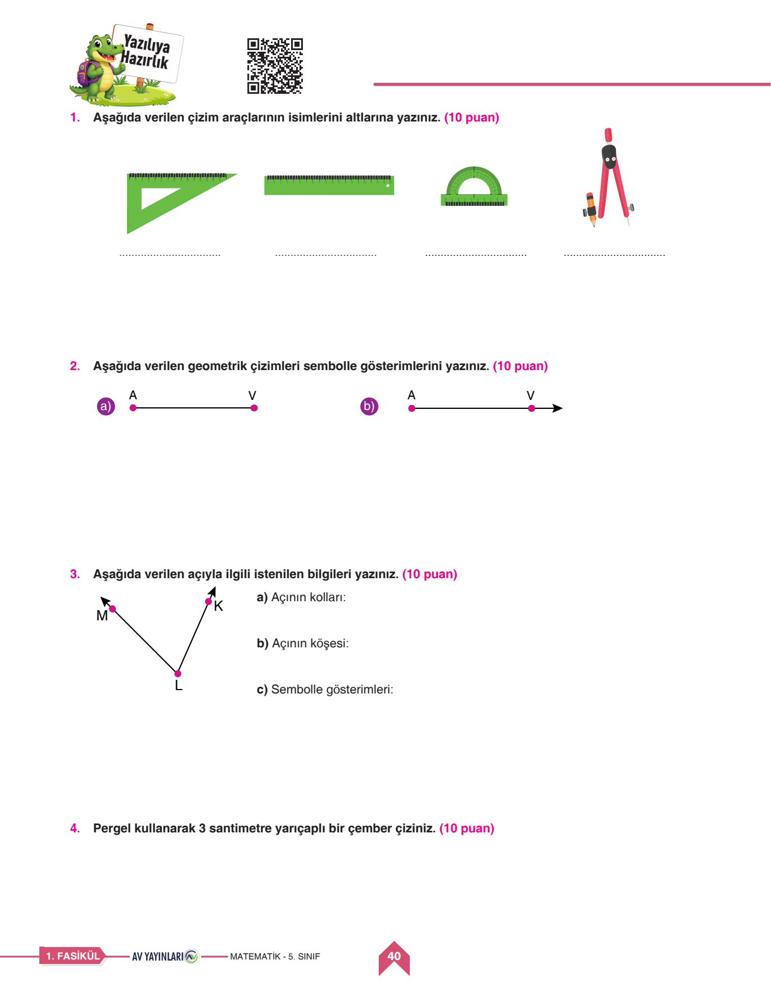
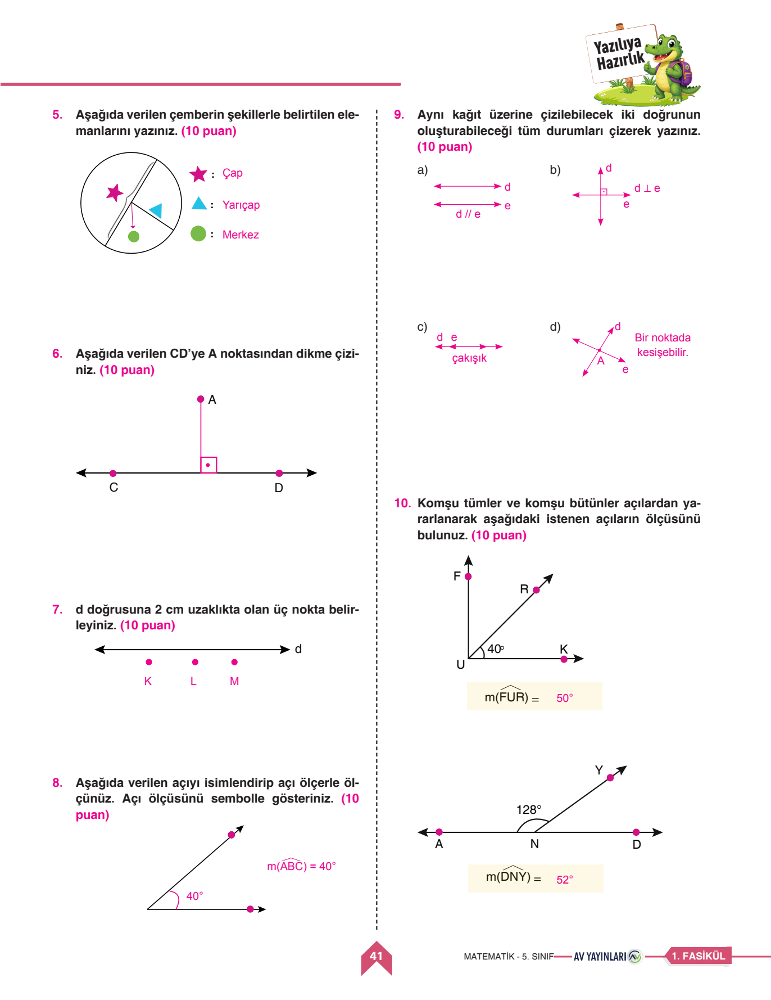

📐 Matematik 1. Dönem 1. Yazılı
Orijinal Sınav Kağıdı Üzerinde Soru Soru Sesli Çözüm • Geometrik Çizimler • Doğru Parçası • Açılar
0
Mevcut Puan / 100

📌 Soru 1: Geometrik Çizim Araçları (10 Puan)
✅ Resmi Çözüm: 1. İletki (Açıölçer): Açıları ölçmeye ve çizmeye yarar. • 2. Pergel: Çember ve yay çizmek, eşit mesafeleri taşımak için kullanılır. • 3. Gönye: Dik açıları (90°) ve dik üçgenleri çizmek için kullanılır.
Puan Ver:
📌 Soru 2: Doğru, Işın ve Doğru Parçası Sembolleri (10 Puan)
✅ Resmi Çözüm: Doğru: Her iki yöne sonsuz [AB doğrusu], Işın: Başlangıcı sabit bir ucu sonsuz [AB ışını veya [AB), Doğru Parçası: İki ucu da kapalı [AB] veya |AB|.
Puan Ver:
📌 Soru 6: Tümler ve Bütünler Açılar (10 Puan)
✅ Resmi Çözüm: Ölçüleri toplamı 90° olan iki açıya tümler açılar, ölçüleri toplamı 180° olan iki açıya bütünler açılar denir. 35 derecenin tümleri: 90 - 35 = 55°, bütünleri: 180 - 35 = 145°.
Puan Ver:

📐 1. Geometrik Çizim Araçları
- Cetvel: Düz çizgiler çizmek ve uzunluk ölçmek için kullanılır.
- İletki (Açıölçer): Açının kaç derece olduğunu ölçmek veya belirli derecede açı çizmek için kullanılır.
- Gönye: 90 derecelik dik açıları oluşturmak ve doğrulamak için kullanılır.
- Pergel: Çember ve yay çizmek, uzunlukları taşımak için kullanılır.
📏 2. Doğru, Işın ve Doğru Parçası
- Doğru: İki ucu da sınırsız uzayan noktalar kümesi (AB doğrusu).
- Işın: Başlangıç noktası sabit, diğer ucu sınırsız uzar [AB ışını).
- Doğru Parçası: İki ucu da sınırlı olan çizgi [AB].
⚪ 3. Tümler ve Bütünler Açılar
- Tümler Açılar: Ölçüleri toplamı 90° olan iki açıdır.
- Bütünler Açılar: Ölçüleri toplamı 180° olan iki açıdır.